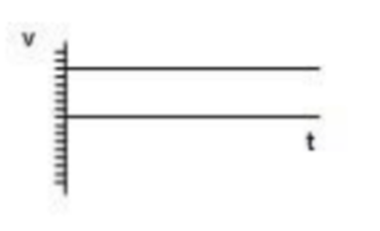
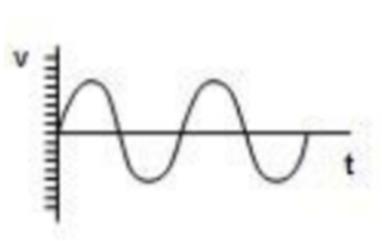
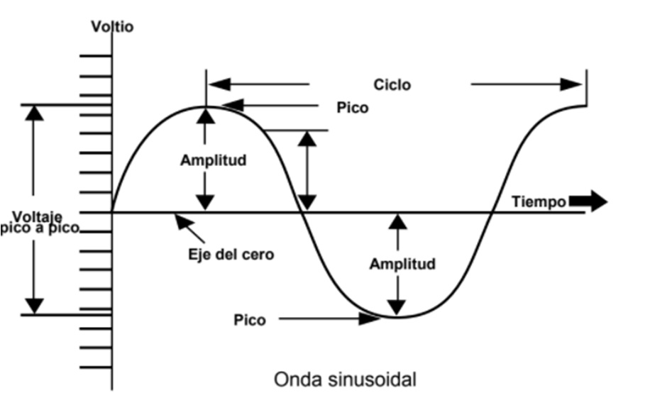

La corriente eléctrica es el flujo continuo y controlado de electrones en un circuito eléctrico.
Cuando se tiene una fuente de voltaje conectada a través de conductores a un dispositivo, las cargas eléctricas
fluyen desde un polo hacia otro; a este flujo se le llama corriente eléctrica y es el indicador de la cantidad de flujo hacia algún punto. La intensidad de corriente se conoce como la variación de carga con respecto al tiempo y su
intensidad se mide en coulombs por segundo; esta unidad se denomina ampere o amperio.
El aparato que se utiliza para medir la corriente eléctrica es el amperímetro.
Corriente Directa
La corriente directa (CD), también conocida como corriente continua (CC), siempre fluye en la misma dirección.
Los electrones fluyen en una sola dirección pues la polaridad del voltaje o de la fuente de la FEM es la misma; una de
las terminales o polos de la batería es siempre positiva y la otra negativa.
La corriente directa nunca cambia de dirección.
Los electrones fluyen desde la terminal negativa (polo negativo) de la fuente de voltaje, recorren el circuito
y retornan a la terminal positiva (polo positivo).
Algunos ejemplos claros de fuentes de corriente continua son: la pila seca, el acumulador de un automóvil, un
generador de cc o un rectificador de corriente.
La corriente directa que nunca cambia en magnitud (o nivel de corriente) se denomina cc estable. Las baterías producen cc estable.

Corriente Alterna
Una fuente de corriente alterna produce un voltaje que regularmente se va alternando, aumentando desde cero
hasta un máximo positivo y decreciendo desde este máximo hasta cero, para volver a aumentar hasta un valor
máximo negativo y decrecer hasta llegar nuevamente a cero; a esta variación completa se le llama ciclo. La
corriente alterna (ca) es un tipo de corriente cuya polaridad se invierte periódicamente.
La corriente alterna cambia tanto en magnitud como en su dirección. En el osciloscopio, el voltaje y la corriente
aparecen a ambos lados del eje del cero o de las ordenadas, según la polaridad del voltaje se alterne y la corriente cambie de dirección.

Onda sinusoidal
El voltaje y corriente alternas producidos por el movimiento rotatorio de un generador asumen la forma de una
onda o curva sinusoidal: ésta es la forma más común de voltaje y corriente alterna.

Las ondas sinusoidales son medidas y comparadas de acuerdo con ciertas características.
La amplitud de la onda sinusoidal nos indica el máximo valor de corriente o de voltaje; éste puede ser positivo o negativo.
- Un ciclo es una repetición completa de la forma de la onda.
- frecuencia es el número de ciclos por segundo. Entre mayor sea el número de ciclos por segundo, mayor será
la frecuencia. Entre mayor sea la frecuencia, menor será la cantidad de tiempo por ciclo.
- Hertz es el término empleado para los ciclos por segundo: 60 hertz = 60 ciclos/segundo.
- Voltaje pico a pico es el voltaje medido entre los puntos máximo positivo y máximo negativo de una onda
sinusoidal.